← Back to workCase Study 03 — IoT · Telecom · Conversational AI
Vivo
Connecting customer experience, IoT support, and internal operations for Vivo's Smart Home ecosystem — one thread among four products I shipped inside Vivo's design system.
Role
Senior Product Designer
Timeline
6 months, discovery to production
Products
Smart Home app, support platform, IoT service journey
Design system
Vivo's system, maintained by DesignOps
400+screens & scenario states
6 modiscovery to production
~20%reported lift in purchase interest*
Liveecosystem remains active
Business context
Vivo offered connected-home products but lacked a dedicated support platform and specialized service team. Smart-home customers were routed through tools and analysts built for other Vivo services — fragmenting diagnosis, installation, and support into processes that weren't built for this product.
The challenge
System-level opportunity
Design one connected experience across the consumer app, technician workflows, and internal support operations for a premium, technically demanding customer segment.
Discovery
Interviewed IoT technicians to understand tools, processes, dependencies, and pain points
Mapped the end-to-end support journey in Miro — stages, actions, touchpoints, emotions, and breakdowns
Analyzed where product information and diagnostic detail were hidden in the customer experience
Aligned the new platform and service model with innovation, product, and operational stakeholders
Solution
Designed a dedicated internal support system with login, dashboards, ticket management, device context, and remote-access workflows
Improved the consumer Smart Home app by surfacing previously hidden information and clarifying device and service states
Structured a dedicated support journey for connected-home customers instead of reusing unrelated service processes
Applied Vivo's consolidated UI and Design System, so design effort stayed on UX architecture and workflow quality
Onboarding — from first open to first device
The consumer app's onboarding sets the tone for everything after it: a short value-proposition carousel, account creation, and a guided first-home setup — designed so a customer with zero technical confidence still ends up with a configured home in a few taps.
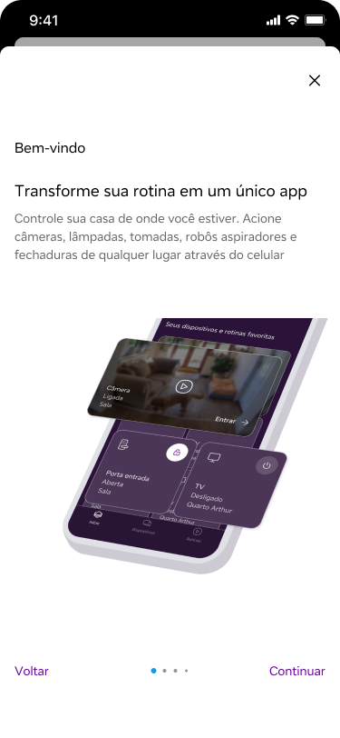
Bem-vindo. "Transforme sua rotina em um único app" — the value proposition, stated in one line before any commitment is asked.
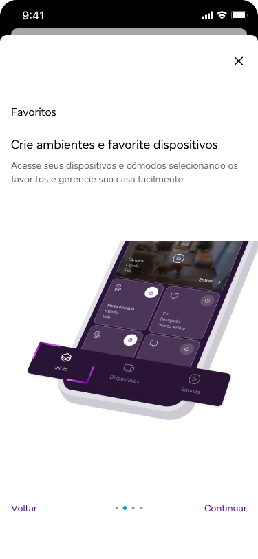
Favoritos. Introduces rooms and favorited devices as the core organizing concept, before the customer has added a single device.
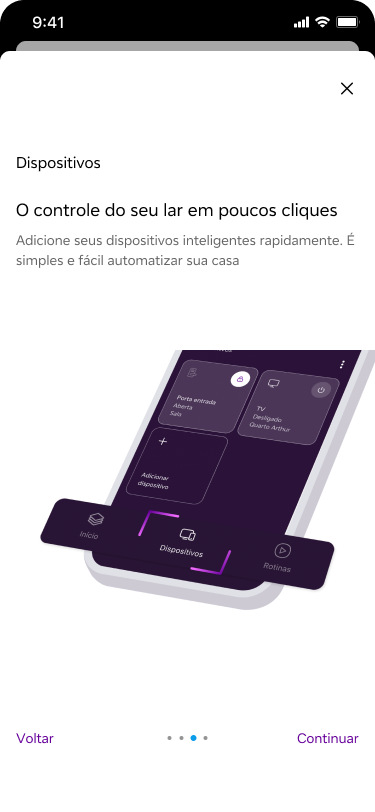
Dispositivos. "O controle do seu lar em poucos cliques" — sets the expectation that adding hardware will be fast.
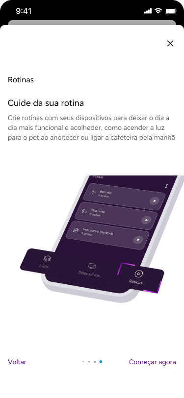
Rotinas. Automations are introduced last, once the customer already understands devices and rooms.
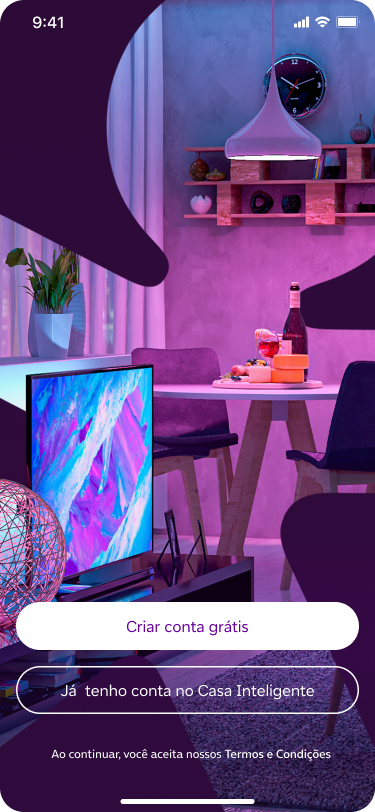
Criar conta. Account creation sits behind the value-prop carousel, not in front of it.
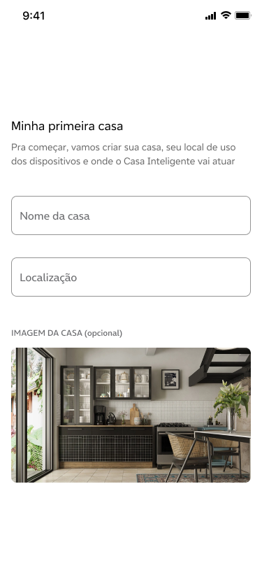
Minha primeira casa. Naming the home and setting its location — the two facts every later automation depends on.
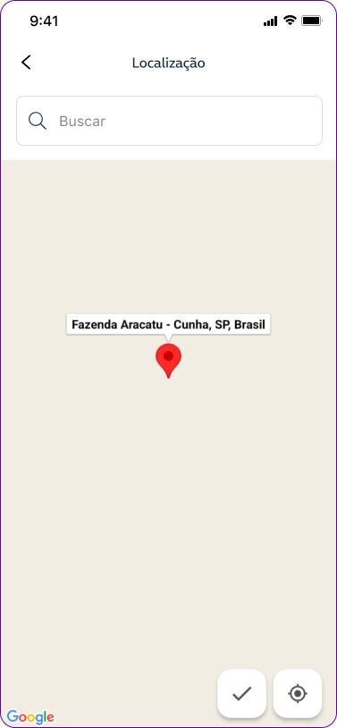
Localização. A map-based picker, since routine-based automations (like "chegando em casa") depend on an accurate home location.
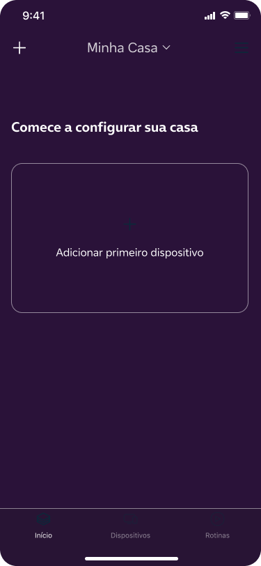
Minha Casa. The empty state closes the loop — one clear next action ("Adicionar primeiro dispositivo"), not a dashboard with nothing in it yet.
Onboarding screens shown above reflect the actual shipped flow.
Pairing — from empty state to an active, working camera
Pairing a physical device is where Smart Home onboarding usually loses people — Bluetooth permissions, Wi-Fi bands, serial numbers, and blinking lights are not concepts a first-time customer already has a mental model for. This flow walks a customer from an empty home through Bluetooth setup, device discovery, network selection, and plan activation, to a working camera.
1 — Getting started
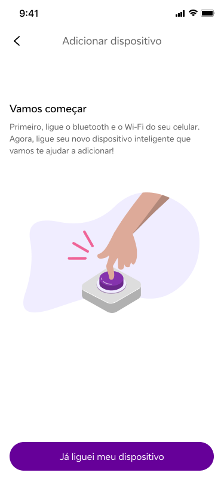
Vamos começar. Two prerequisites stated up front — phone Bluetooth and Wi-Fi on, device powered — before asking the customer to do anything.
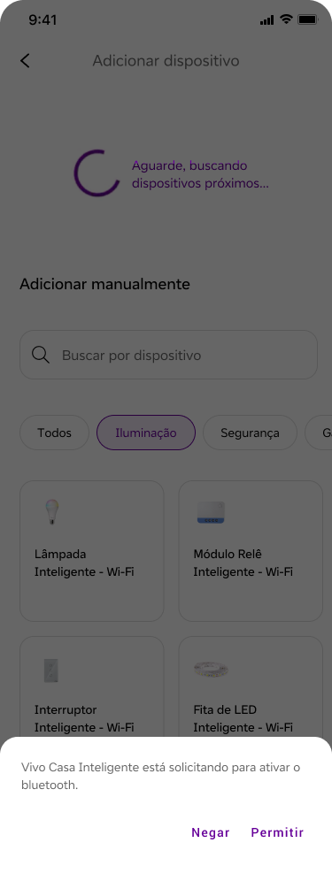
Permissão de Bluetooth. The OS permission dialog appears on top of the catalog the customer is already scanning, so the request has visible context instead of interrupting a blank screen.
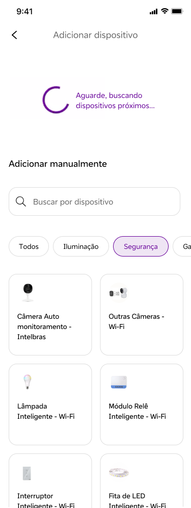
Catálogo com autoscan. Nearby-device scanning runs in the background while the customer can still browse and pick a device manually by category — neither path blocks the other.
2 — Identifying and connecting the device
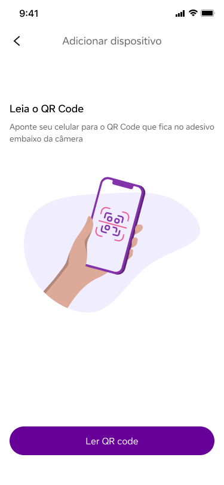
Leia o QR Code. The fast path: scan the label under the camera instead of typing anything.
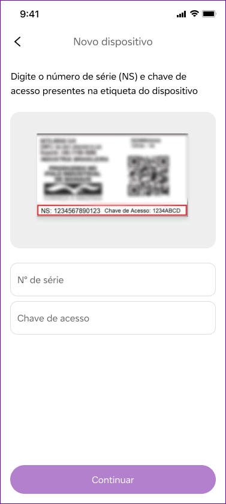
Número de série (fallback). When the QR code won't scan, an annotated example label shows exactly which two fields to type — not just empty inputs with a generic label.
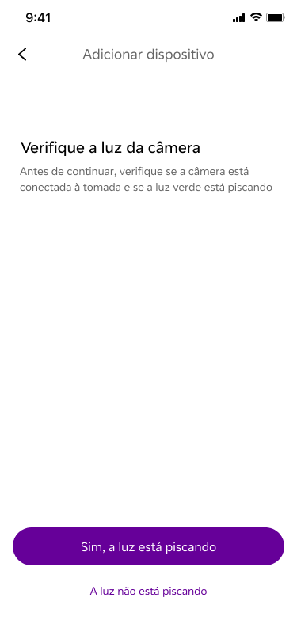
Verifique a luz. A physical-world checkpoint — confirms the hardware is actually powered and in pairing mode before the app tries to talk to it.
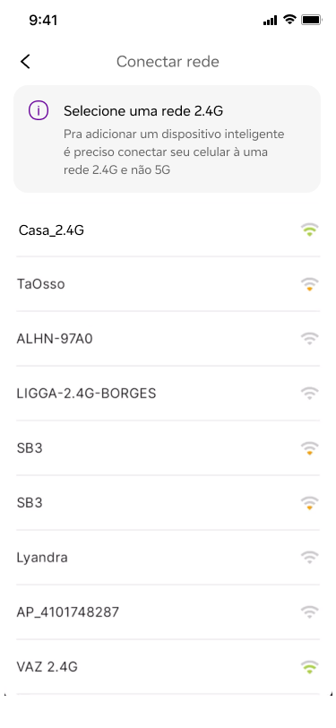
Selecionar rede. An explicit 2.4G-vs-5G callout up front — the single most common reason a smart-home pairing silently fails.
3 — Setup in progress
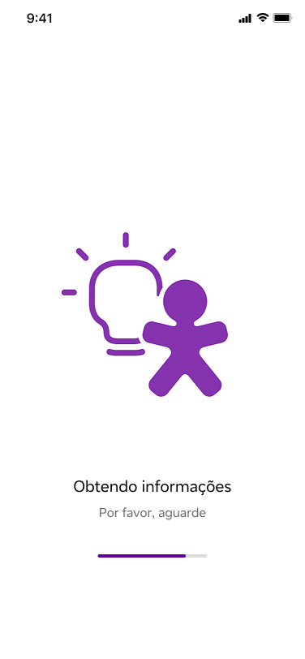
Obtendo informações.
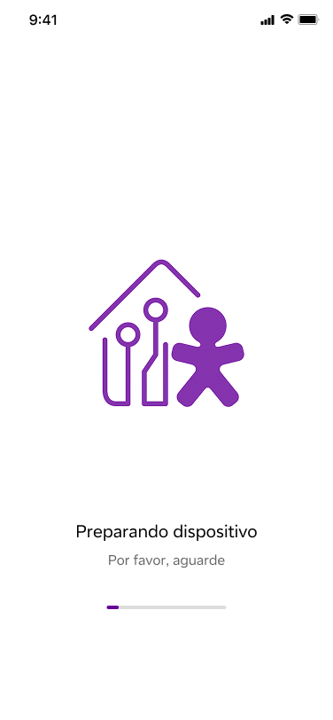
Preparando dispositivo.
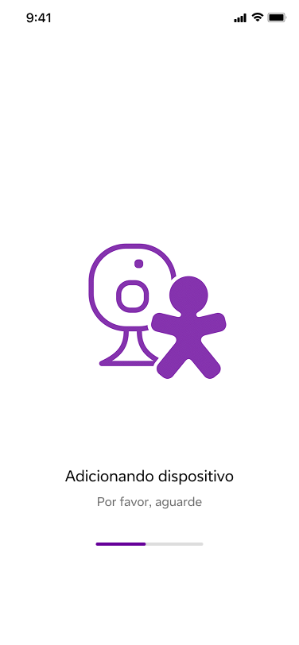
Adicionando dispositivo. Three distinct, named steps instead of one generic spinner — a customer mid-pairing can tell setup is progressing, not stuck.
4 — Naming, confirming, and activating the plan
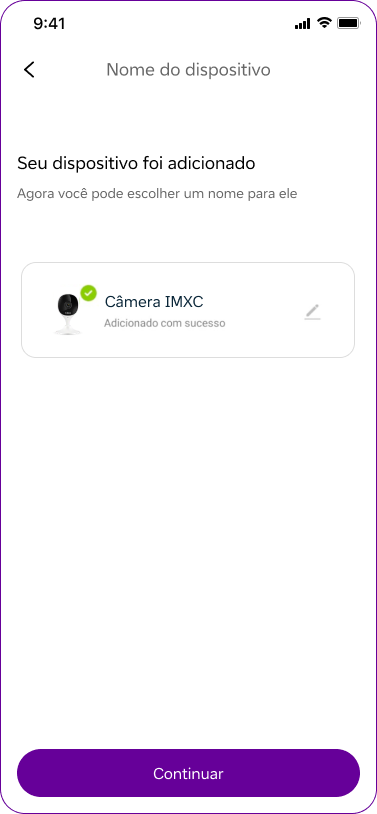
Nome do dispositivo. Confirms success and hands naming to the customer immediately, with a sensible default already filled in.Deu certo! A full-bleed confirmation moment before dropping back into routine app navigation.
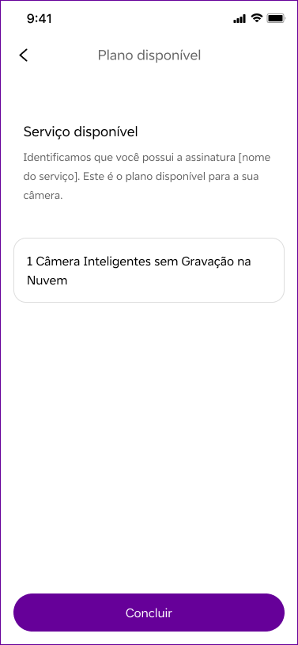
Plano disponível. Surfaces the specific plan tied to this device (cloud recording included or not) before any payment conversation starts.
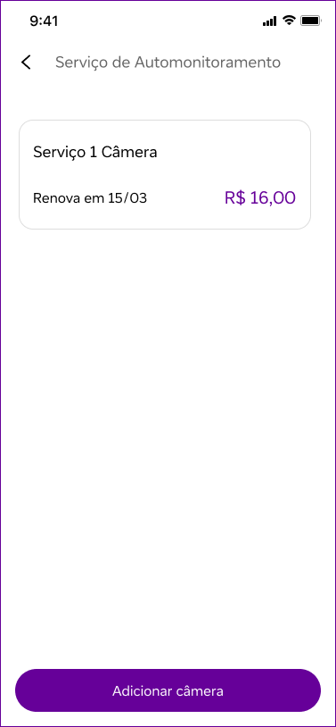
Serviço de Automonitoramento. Renewal date and price stated together, not buried — a cloud-recording subscription tied directly to this specific camera.
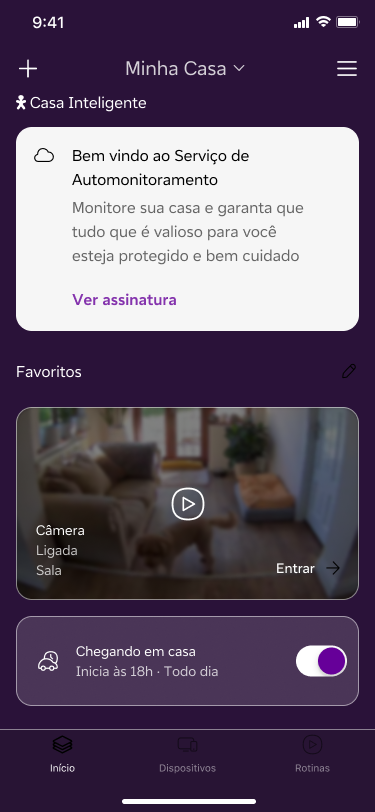
Confirmação na Home. The purchase confirmation resurfaces contextually the next time the customer opens the app, not just as a one-time toast.
5 — End state
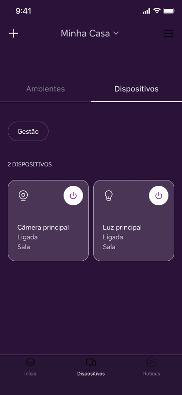
Dispositivos. The new camera sits alongside existing devices in the same room — pairing one device doesn't create a separate, disconnected view.
Edge case — no matching Vivo plan
Not every customer scanning a device already has an eligible Vivo plan tied to their CPF. Two variants were designed for this dead end, differing in tone and the recovery action offered.
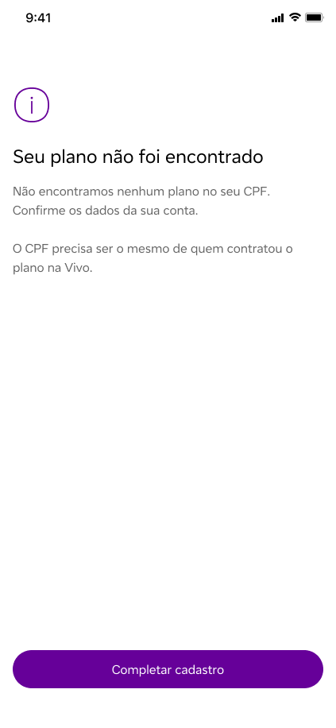
Seu plano não foi encontrado. States the CPF-matching rule plainly and offers a single recovery action: complete registration.
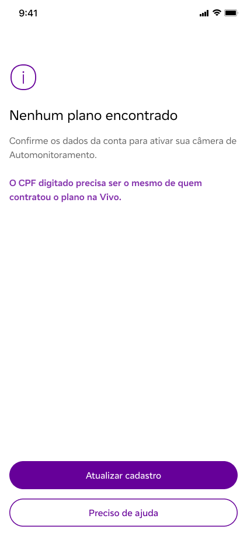
Nenhum plano encontrado. A second variant, framed around the camera specifically, adds a "Preciso de ajuda" escape hatch alongside the update-registration path.
Key product decision
Not a screen-level call
The most consequential decision wasn't a UI adjustment — it was treating Smart Home as a distinct service ecosystem that needed dedicated operational workflows, specialized support, and connected context across both the customer-facing and internal tools, rather than folding it into Vivo's existing support model.
Outcome
Improved support-flow clarity and the usability of the Smart Home app
Supported more efficient device installation and troubleshooting
Reduced device returns, based on project and operational feedback
Reported ~20% increase in purchasing interest among customers who already owned a smart-home device
The products entered production and continue to be active
*Evidence note — the 20% figure and qualitative outcomes are reported project results provided from the experience; exact analytics definitions should be confirmed before public publication.
What I learned
Designing for a specialized market means understanding not only user behavior, but socioeconomic context, device cost, technical confidence, and the operational ecosystem required to sustain the experience after purchase.
Also at Vivo — Sirius
Sirius — the fiscal platform behind Vivo Telecom & Mercadoria
An internal B2B platform for issuing and correcting NFCom (telecom fiscal documents), tracking billing cycles, and managing rejections across Telecom and Mercadoria — the two business lines it serves. Real billing rows in this system run into the millions of reais per cycle; the design problem was making that density scannable for the finance and operations teams who live in it daily, on a foundation built on Mística, Telefónica's own design system. The file history shows continuous iteration across most of a year, with dedicated Design Review and QA passes.
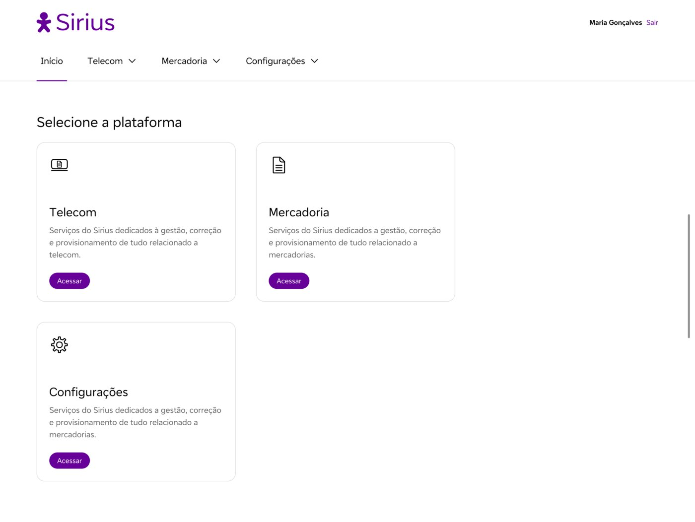
Platform selector — Telecom, Mercadoria, and Configurações.
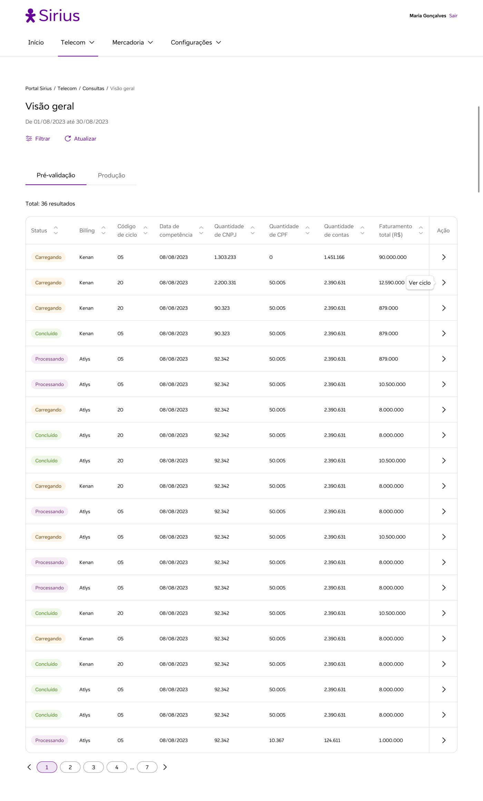
Billing-cycle table, with per-row revenue and status filtering.
Also at Vivo — Fibra Lite
Fibra Lite — a self-serve fiber subscription funnel
Catalog → coverage check → registration → installation scheduling → payment, with fraud detection running at two separate points in the funnel (TOPAZ at scheduling, KONDUTO at checkout). Built and handed off with the same rigor as a shipped e-commerce product: versioned handoff pages, a component library, QA-specific pages mirroring each flow, and full Tablet/Mobile responsive variants.
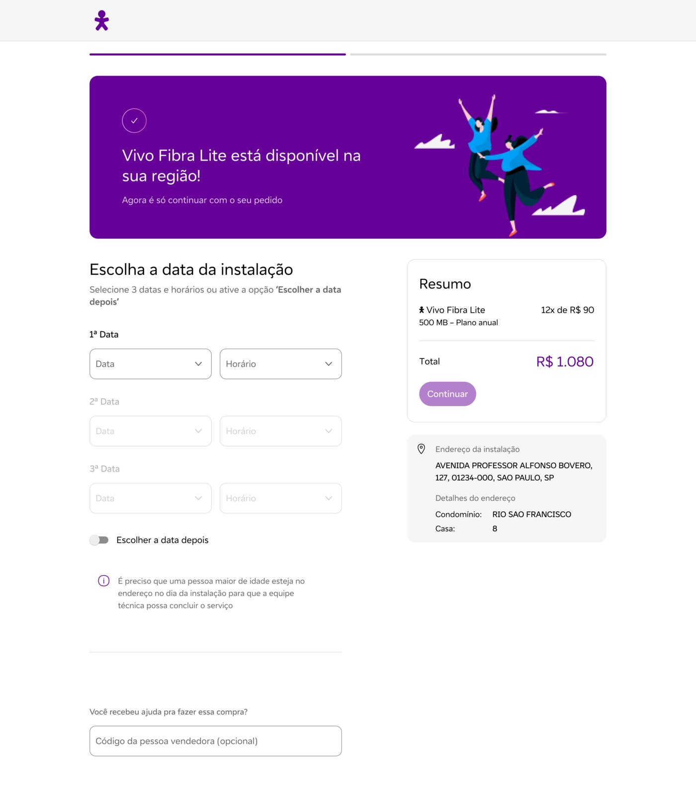
Installation scheduling, with order summary and address confirmation.
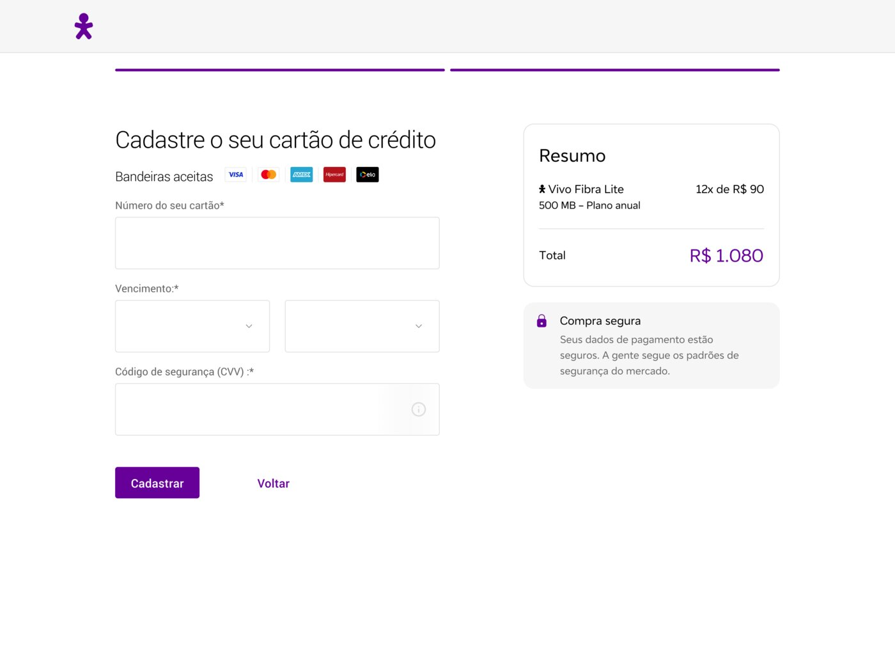
Payment step, with a visible security note at the point of highest drop-off risk.
Also at Vivo — Aura
Aura — designing the conversation, not just the screen
Conversation design for Aura, Vivo's AI support assistant, across five decision tracks (repeat customers, fraud & scheduled visits, mass outages, sync issues, technician scheduling). Every path is versioned, validated against Content Ops, and reviewed on a monthly cadence with managers — the same production discipline as a shipped interface, applied to dialogue. This is the track record I'd point to for conversational and AI-assisted product design specifically.
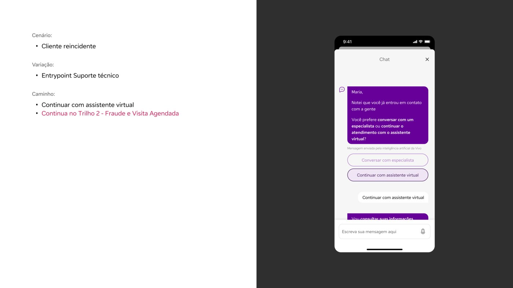
Trilho 1 — Repeat customer: the scripted decision path next to the live chat mockup it produces.